Material Outlines
Outlining Assets with Post Process Materials in Unreal Engine 4
Material outlines are important in games due to their use to indicate what someone could potentially interact with in a game or they can be used to achieve a certain art style. This tutorial will cover how to achieve this effect in Unreal Engine 4. We will use the tools of the engine to create a post process material that generates an outline around meshes based on the angle of the camera in relation to that object. Depending on the color of the outline, you could even give a paper cut-out feel to your assets with this. Much like an object would be highlighted while you have it selected in the editor, this method uses a persistent stencil around the objects of your choosing so that it remains highlighted even in play. Although this implementation is not costly on systems, this tutorial assumes that the reader has a sufficient understanding of Unreal Engine 4 and so will generally just cover the steps needed to implement the feature. If you wish to know more about the impacts on performance so the deeper workings of such an implementation, I suggest to check out UE's documentation to learn more! The stuff in there can be generalized depending on the topic, but always provides resources to know more.
Creating Material Outlines for assets
Step 1
This implementation revolves around using a custom stencil on objects while in play. In order for this to work, we must then enable the custom stencil option in the project settings. So, from the Editor, access the settings button that should be in the middle of the bar above the viewport. A separate menu should open and provide you with many options. On the left sidebar, scroll down to the Engine settings and select Rendering. Scroll down to Postprocessing, and under Custom Depth-Stencil Pass, select "Enabled with Stencil".
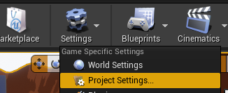 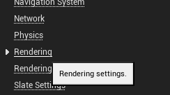 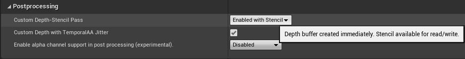Step 2
Now that we have adjusted the project settings to handle the feature, we can get started on implementing it. Head to your materials folder and create a new material. Name it "M_MaterialOutline", or whatever you wish. Open the material in the editor, and under the material settings in the Details panel, change the Material Domain to Post Process. This is because we will later pass this material through a Post Process Volume.
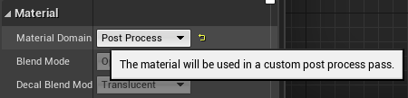Step 3
We will now create the edge detection features. From the material editor, on the left of the master node, create a SceneTexelSize node. Under it, create a Scalar parameter node by holding the s key and left-clicking and call it EdgeWidth. This will be, as you can guess, the width of the edge around the objects we assign this implementation. This value will scale to how close or far your camera is to the object. I assigned it the value of 1.4 because it looked nice with the camera angle and distance I am using, but you can pick whatever value you see fit. Next, create a multiply node to the right of these two nodes. Assign the SceneTexelSize to input A, and the EdgeWidth to input B. Next, to the lower right of the multiply node, create another multiply node and change the default value of B to -1. Assign the output of the first multiply node to input A of the second multiply node. Above the second multiply node, create an add node and assign the output of the first multiply node to input A of the add node. The first multiply node should be outputting to two nodes now. Below this, create a ScreenPosition node. Link the output of the ViewportUV to input B of the add node. Then, to the bottom right of the second multiply node, create another add node. Link the output of the ViewportUV of the ScreenPosition node to input B of that node as well, and the output of the second multiply node to input A of that add node. You can box select all these nodes and name it Edge Detection.
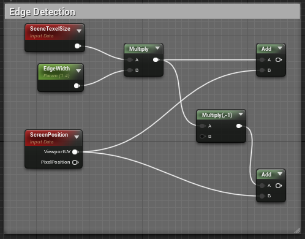Step 4
We are not finished with edge detection, though. We must now link this to the custom stencil we want to create to readily assign it to objects. To the right of the first add node, create a SceneTexture node. Change the Scene Texture Id in the Details panel of that node to CustomStencil. Duplicate the node by selecting it and pressing control + W and drag it down to the right of the second add node. Now link the output of each add node to their respective SceneTexture nodes at the UV input. For each SceneTexture node, drag the output of the color to the right and create a ComponentMask node. We only want to use a single value for this so make sure to have the G component of the mask disabled. Drag the output of the top mask out to the right of between the two nodes and create a distance node. This should now occupy the input A of the Distance node. Grab the output of the mask node below and drag it to input B of the distance node. This will complete the Edge Detection part of the implementation.
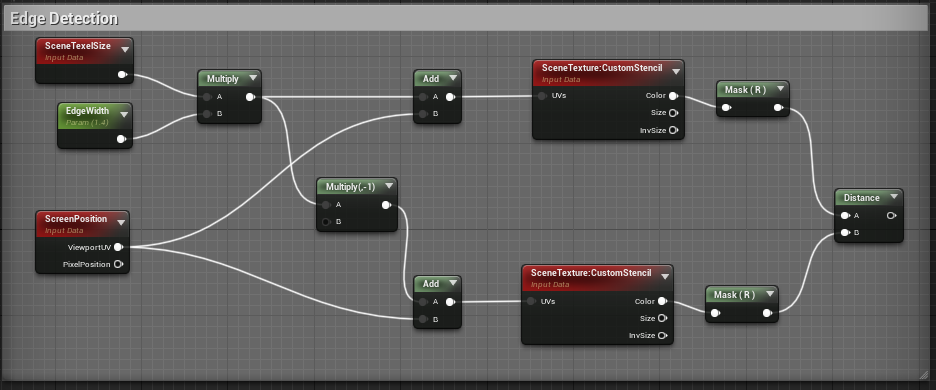Step 5
Now that we have edge detection set up, we have to create the edge color of your choosing. Below the Edge Detection cluster, create a vector parameter node by holding V and left-clicking. To the right of it, right-click and create a MakeFloat4 node. Link the R output of the Vector Parameter node to input X of the MakeFloat4 node, then the G output to input Y, B to Z, and finally the Alpha output to input A(s) of the MakeFloat4 node. You can now box select this, press C, and name it Edge Color. You can choose whatever color you'd like, I am using black for the sake of simplicity. It should look like:
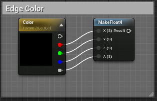Step 6
Between the Edge Color and Edge Detection clusters, create a Scalar Parameter and name it Stencil Value. Change the default value to 3, or whatever stencil value you would like to use. We will come back to this later on but keep this value in mind as you will assign it to the objects you want to outline. Create a constant value node next to it and set the default value in the Details panel to 0. To the right of this node, right-click and create an If statement node. This is where we will apply some of the logic to combine the edge detection with the stencil. Drag the output of the Distance node to input A of the If statement node. Next, drag the output of the Stencil Value node to input B and input A == B of the If statement node. Finally, drag the output of the Constant 0 node to inputs A > B and A < B. This logic essentially grabs the space beyond the edge of the object (defined by the value of the EdgeWidth node) and assigns everything in it to the Stencil Value, while assigning a 0 to whatever is out of its range.
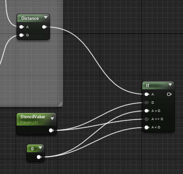Step 7
Next we will set up the If Statement that takes in the area of interest and assigns it the color we've picked to make the outline. Drag the output of the If Statement node to the right and create another If Statement node. Drag the output of the Constant 0 node to input B. Now drag the output of the MakeFloat4 node to the input A > B of the second If Statement node. Finally, we will create a SceneTexture node to the right of the MakeFloat4 node. In the Details panel, head over to Scene Texture Id and change it to PostProcessInput0. Now drag the output of the Color of the SceneTexture node to the inputs A == B and A < B of the second If Statement node. Now drag the output of that If Statement node to the Emissive Color input of the master node. Click Save, for now.
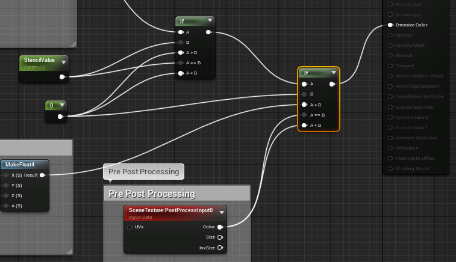Step 8
Head back to the level viewport. Create a material instance of the MaterialOutline we made. In the World Outliner, find your Post Process Volume asset, or create one if you do not have one. In the Details panel, scroll down to rendering features. Under the Post Process Materials option, open up the array option and add an element. Select Asset Reference and type in the name of the material instance you just created.
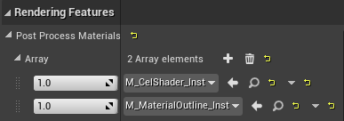Step 9
Now select the object you would like this outline to be on. In the Details panel, head down to the Mesh options. Enable Render CustomDepth Pass, and in the CustomDepth Stencil Value option, type the value you assigned to the Stencil Value node in the material. For this tutorial, I chose the value "3", so I would type in 3. You should now see the outline around the object.
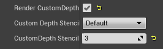Step 10
As you should see now, the outline is there but it is jittery. This is due to how UE4 orders post process materials by default. A post process material is inserted at the end of the post processing graph, after tone mapping, color grading, and the application of temporal anti-aliasing. Temporal anti-aliasing improves image quality by combining multiple frames together and moving the rendering of the whole scene by a sub pixel each frame. Post process materials are then put after this for ease of use and performance, and this is generally true for the majority of simple post-processing effects. Yet our effect is being "jittered" by the temporal anti-aliasing, and so, we need to move this effect up in the post processing graph.
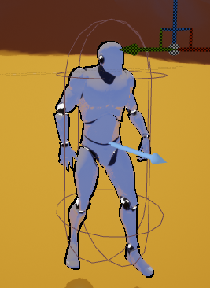Head back to the MaterialOutline by opening it up. By selecting the master node, you can head down to the Post Process Material settings in the Details panel and check out the Blendable Location options. Hovering above it will show that this is the location "where the node is inserted in the (post-processing graph)", and so where we want to enable it. The default setting for this is "After Tonemapping", as I explained earlier. We are going to change this to "Before Tonemapping". This will move the effect up the graph and make the jittery effect stop. There you go! Your material outline, ready to use.

Performance
I have found through testing that passing the custom stencil as a post process material is the most performant way to implement a colored outline that changes based on the camera angle. From UE's shader complexity view, which can be seen by pressing (alt + 8) in the editor viewport, the objects that use the post process effect are very efficient and require little to moderate effort in terms of computational needs. This effect scales to the complexity of mesh structures as well as the number of them that are currently rendered, so if you were to use this effect on interactable objects, or characters in scene, or both, you should not expect a large impact on performance. I went ahead and tested the shader complexity of the Cel Shader and Persistent Trails with this one as well and could not find any drop in performance, so feel free to combine all three methods!
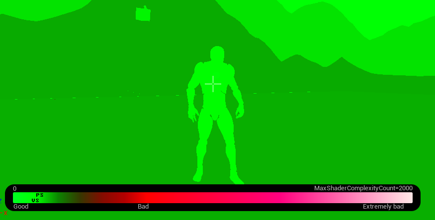